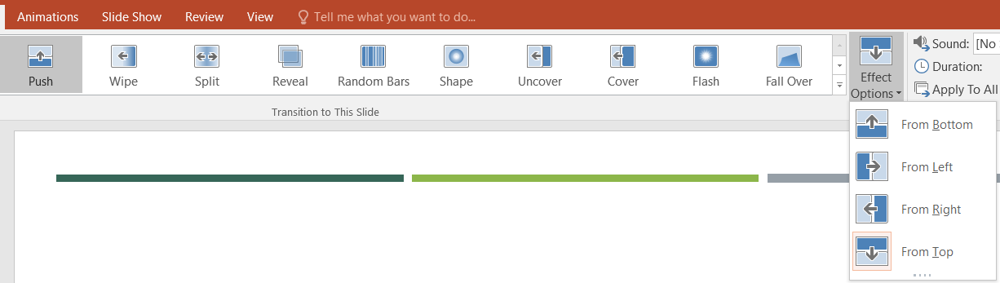

Selectaţi diapozitivul → fila Tranziţii (Transitions) → grupul Tranziţia la acest diapozitiv (Transition to this Slide) → se alege un tip de tranziţie din listă → se selectează o optiiune pentru efect (Effect Options).

→ grupul Timing se selectează Durata (Duration) → se alege un sunet pentru tranziţie (Sound) din lista deschisă sau din fişier (Other Sound) → se alege modul de avansare a diapozitivului (Avance Slide) la clic de mouse (On Mouse Glick) sau Automat după.. After..) şi se setează timpul după care apare . Obs.: Dacă se doreşte acelaşi mod de tranziţie pentru toate diapozitivele se dă clic pe butonul (Apply to All), dacă nu, se repetă paşii de mai sus pentru fiecare diapozitiv.
Clic pe obiectul dorit → fila Animaţii (Animation) →grupul Animaţii (Animation) → se alege un efect din listă → se selectează o optiiune pentru efect (Effect Options)
Obs.: Se mai poate particulariza:
- Modul de declanşare (Start) la clic de mouse (on click) sau automat (With previvios, After previsios)
- Direcţia (Direction): Horizontal, Vertical
- Viteza (Speed): Very slow, Slow, Medium, Fast, Very fast
Clic pe obiectul dorit → fila Animaţii (Animation) →grupul Animaţii avansate (Advanced Animation) → Adaugă animatie (Add Animation) → se alege un efect din listă

Obs.: Se mai poate particulariza folosind Animation Pane:
Fişier (File) → Tipărire (Print) → Selectăm imprimanta (Name …) → Selectăm diapozitivele tipărite (All sau Slides…) → Stabilim numărul de copii (Number of copies)